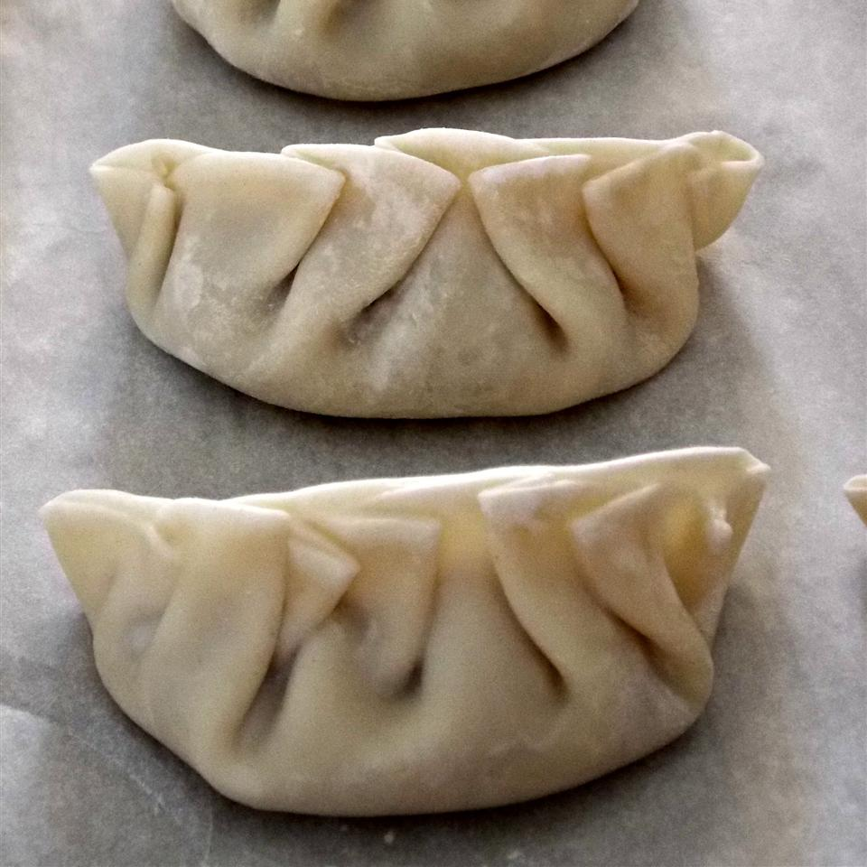

Home
Coconut Milk Cake Recipe

Discription
I submitted these for the 2009 Dandelion Cook-off at Breitenbach Winery
Dandelion Festival. These were a crowd favorite, especially the Asian
dipping sauce. If you like dandelion greens, you'll love these.
Formed dumplings can be frozen up to 2 months.
Ingredients
- 2 pounds ground pork
- 2 cups minced dandelion greens
- 3 cups minced napa cabbage
- ½ cup minced bok choy leaves
- 4 green onions, white and light green parts only, minced
- 1 tablespoon minced fresh ginger root
- 3 cloves garlic, minced
- 1 (8 ounce) can bamboo shoots, drained and minced
- 3 tablespoons soy sauce
- 1 teaspoon white pepper
- 1 teaspoon kosher salt
- 1 teaspoon white sugar
- 4 teaspoons sesame oil
- 1 egg whites
- 1 tablespoon water
- 100 wonton wrappers
- ½ cup vegetable oil
- 2 teaspoons chili oil, or to taste
- 3 tablespoons hoisin sauce
- ½ cup soy sauce
- 4 teaspoons sesame oil
- 1 teaspoon white sugar
- 3 tablespoons balsamic vinegar
- 1 teaspoon minced fresh ginger root
- 2 tablespoons chopped green onion
- 2 cloves garlic, minced
Steps
- Mix pork, dandelion greens, napa cabbage, bok choy, 4 minced green
onions, 1 tablespoon of ginger, 3 cloves of garlic, bamboo shoots,
3 tablespoons of soy sauce, white pepper, salt, 1 teaspoon of sugar,
and 4 teaspoons of sesame oil. Chill in the refrigerator 6 to 8 hours,
or overnight.
- Beat the egg white with the water in a small bowl and set aside.
Place 1 tablespoon of the pork mixture into a wonton wrapper, working
one at at time. Cover additional wrappers with a moist towel to
prevent drying. Brush the edges of the wrapper with the egg white
mixture. Fold the wrapper and seal the edges with a moistened fork.
- WSpray a large skillet with cooking spray. Heat 2 tablespoons for
vegetable oil over medium-high heat. Working in batches, place the
dumplings into the skillet, seam side up. Cook until the dumplings
brown slightly, 30 seconds to 1 minute. Pour 1/2 cup of water into the
skillet and cover. Gently steam the dumplings until the oil and water
begin to sizzle, 7 to 8 minutes. Once the water is cooked off, flip
the dumplings and continue cooking until the bottom begin to brown, 3
to 5 minutes. Repeat in batches with the remaining dumplings, oil, and
water. Serve with dipping sauce.
- To make dipping sauce: Combine chili oil, hoisin sauce, 1/2 cup of
soy sauce, 4 teaspoons of sesame oil, 1 teaspoon of sugar, balsamic
vinegar, 1 teaspoon of ginger, 2 tablespoons of green onion, and 2
cloves of garlic in a bowl.